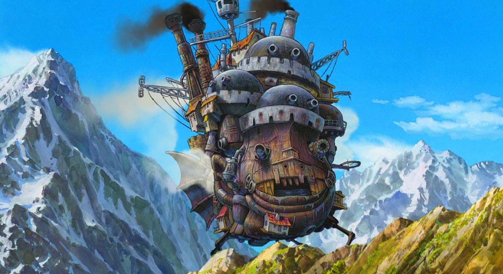

Guia dos Melhores Filmes

O Castelo Animado
Discrição
Uma jovem sem autoconfiança é amaldiçoada com um corpo envelhecido por uma bruxa odiosa. Sua única chance de quebrar o feitiço é um jovem feiticeiro em um castelo itinerante.
Prêmioss
- Oscar 2006 – Indicado a Melhor Filme de Animação
- Hollywood Film Awards 2005 – Vencedor de Animação do Ano
- Prêmios Anime de Tóquio 2005 – Animação do Ano, Melhor Diretor (Miyazaki), Melhor Dublagem (Chieko Baishō) e Melhor Trilha Sonora (Joe Hisaishi)
Outros filmes
Suzume -
O Castelo Animado -
Your Name